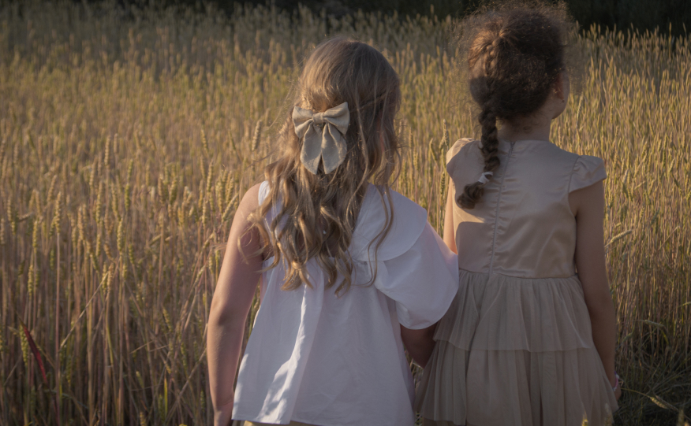

начало...

Перед началом фотосессии рекомендуется выбрать определенную тематику
или стиль, чтобы создать атмосферу и подчеркнуть индивидуальность ребенка.
Это может быть тема природы, праздника, любимого персонажа из мультфильма
или просто игровая ситуация.
~
Важно учесть возраст и настроение ребенка,
чтобы сделать фотосессию комфортной и интересной для него.
Младенцам и детям до года часто делают фотосессии в домашней обстановке,
чтобы сохранить естественность и уют.
Для детей старшего возраста можно выбрать как домашнюю,
так и уличную фотосессию, в зависимости от погоды и предпочтений.